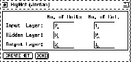

Next: BigNet for Elman
Up: BigNet for Partial
Previous: BigNet for Partial
The BigNet window for Jordan networks is shown in figure
 .
.

Figure: The BigNet Window for Jordan Networks
In the column No. of Units the number of units in the input,
hidden and output layer have to be specified. The number of context
units equals the number of output units. The units of a layer are
displayed in several columns. The number of these columns is given by
the value in the column No. of Col.. The network will be
generated by pressing the  button:
button:
- The input layer is fully connected to the hidden layer,i.e.
every input unit is connected to every unit of the hidden layer.
The hidden layer is fully connected to the output layer.
- Output units are connected to context units by recurrent
1-to-1-connections. Every context unit is connected to itself
and to every hidden unit.
- Default activation function for input and context units is the
identity function, for hidden and output units the logistic function.
- Default output function for all units is the identity function
To close the BigNet window for Jordan networks click on the
 button.
button.
Niels.Mache@informatik.uni-stuttgart.de
Tue Nov 28 10:30:44 MET 1995